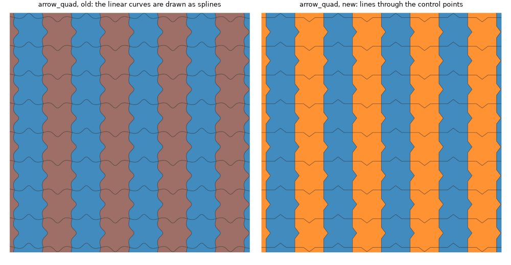
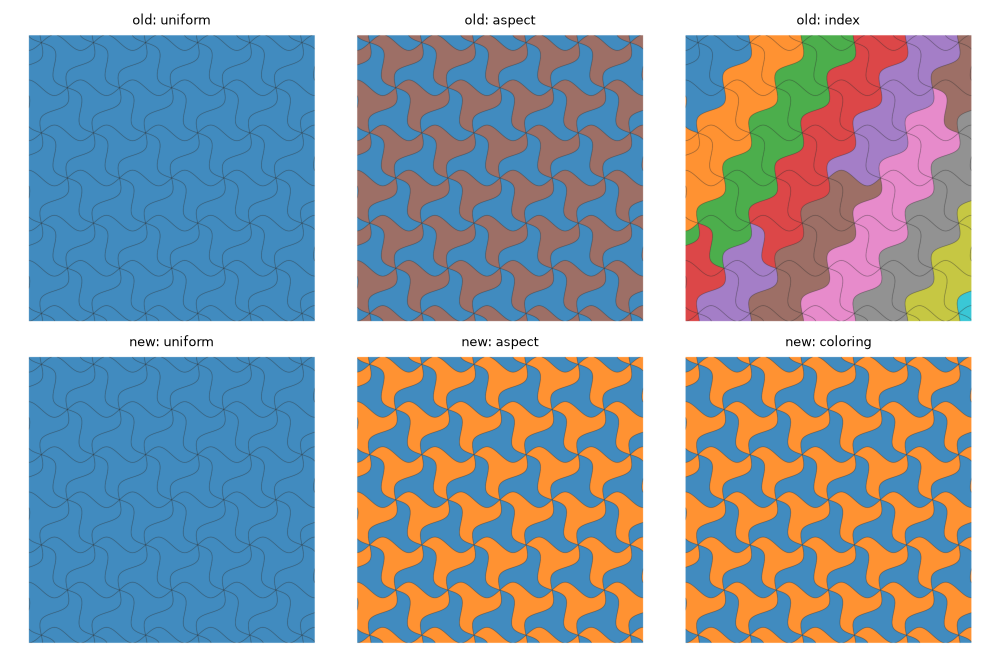
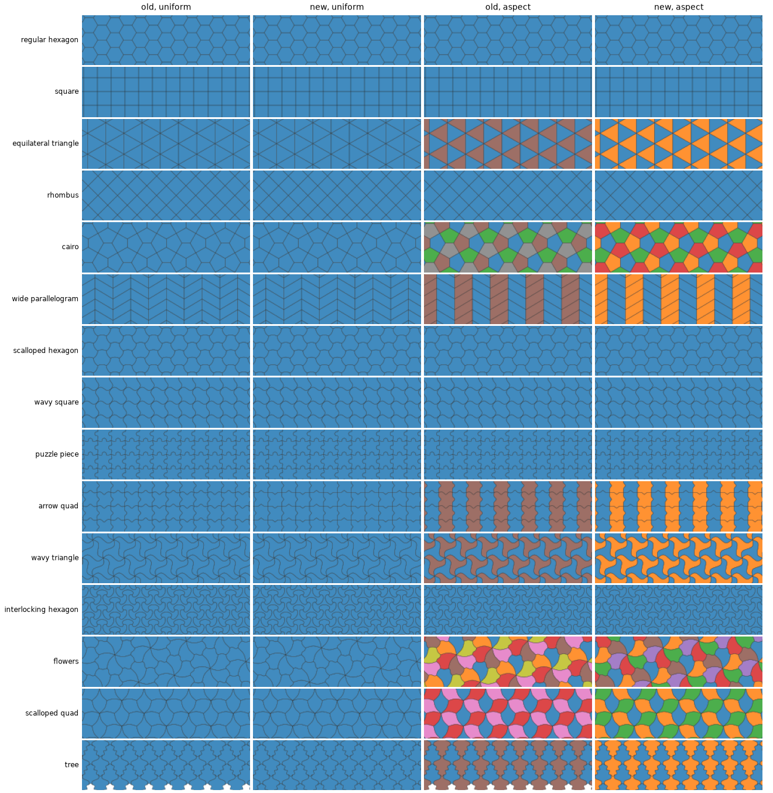
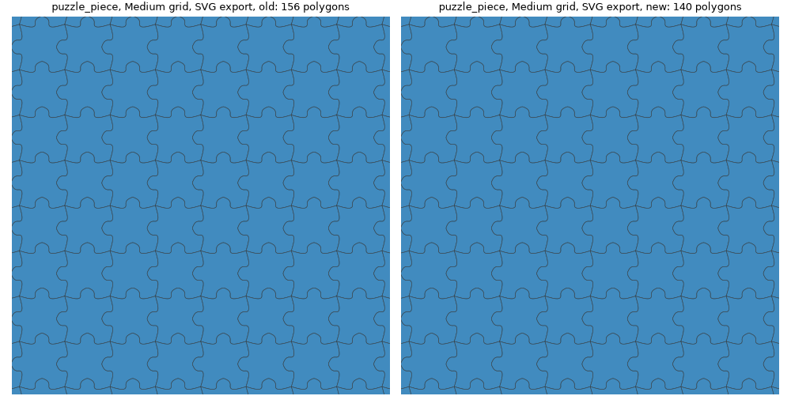
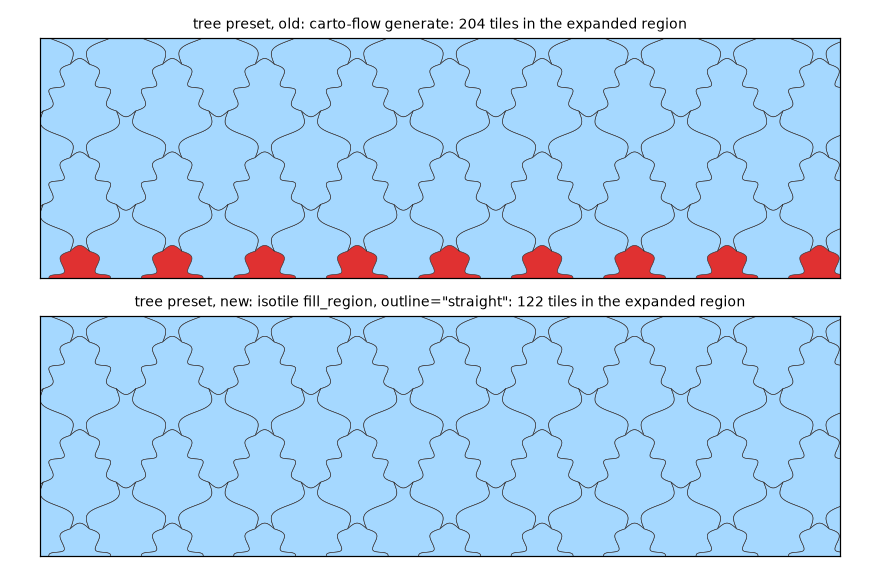

The GUI drops carto-flow, tactile and shapely for isotile. The design is an immutable Draft with a model and a thin state adapter; an invalid edit is refused with a message. The preview selects tiles with the straight outline, both save buttons write isotile 1.1, the loader repairs old files. The page shows the old and the new renders (preview strips, color modes, the tree gap, a linear preset, SVG) and lists every intended difference with the test that asserts it. PR 2 of the isotile GUI port.
PR 2 of the port plan of proposal-isotile-gui, section 8. The app now imports only isotile, numpy, panel, bokeh, matplotlib, svgwrite and pandas. The JavaScript handlers are unchanged and were not run (no browser).
Files in this directory: render_old.py renders the preview strips, exports and tile polygons of the old GUI (run in an environment with carto-flow 2.0.0, tactile and the old GUI at 4444513); render_new.py renders the same with the ported code; make_figures.py composes the figures from the two directories and prints the pixel statistics.
python render_old.py OLD # old environment
python render_new.py NEW # ported GUI installed
python make_figures.py OLD NEW| Module | Change |
|---|---|
editor_model.py (new, no Panel) | frozen Draft (type, parameters, curves, modes) with report() and tiling() derived and cached; EditorModel with history, coalescing, baseline and Reset; node rules move_node, add_node, remove_node (S and U nodes in pairs), editable; load_design with the loader repairs; cached type_info, exact parameter_info (derivative from vertex_coeffs), parameter_groups |
state.py | TilingState is a thin adapter: one parameter draft, derived tiling_type, parameters, edge_curve_modes, history_rev, source_label, active_curve_id; ViewSettings for the preview settings; notifications through an injected callable; a refused edit notifies and redraws the views from the current draft; replaces 25 fields, the _batching flag and 26 watchers |
exports.py (new, no Panel, no shapely) | strip_tiles (fill_region(outline="straight", margin=0.25)), export_tiles (curved outline, margin=0.1), face_colors (uniform, aspect, coloring), strip and export PNG on Figure (no pyplot), SVG, GeoJSON (TileSet.to_geojson), design JSON (to_dict plus description and metadata), Python snippet (repr(tiling)) |
components/prototile_editor.py | tiling.vertices, edge_outlines(), cached parameter_groups with the exact Jacobian; the duplicated block of _update_figure and _solve_param_delta removed; slider and vertex drag go through set_parameter(s) |
components/curve_editor.py | isotile.enforce_symmetry and interpolate; every edit is a TilingState operation (set_curve, move_node, add_node, remove_node, set_mode, copy_curve); dead code removed (_add_point, _remove_point, _remove_point_at, _on_right_click, _build_curve_mode_widget) |
components/preview_strip.py, load_save.py, gallery.py, type_selector.py, history_toolbar.py | isotile API (list_presets, find_types, get_type, prototile(normalized=True)); exports and Save write through exports.py; the loader is TilingState.load_data |
utils/ | spline_cache.py and the GUI's symmetry rule deleted; curve_presets.py keeps the 17 presets; icons.py has the prototile SVG |
pyproject.toml, ci/ | isotile as the archive URL of c1535fc with allow-direct-references; numpy and pandas declared; shapely and carto-flow dropped; ci/constraints.txt keeps only ruff; lint baseline 11 errors and 2 files to 3 and 0 (the 3 left are the subprocess call and two imports in app.py); mypy 495 errors to 296, still advisory; README and Repository point to isotile and this repository |
Pixel comparison of the 15 strips (232 by 69 pixels in both, share of pixels that differ by more than 0.05 in intensity):
| Color mode, old against new | Median | Largest |
|---|---|---|
| uniform | 0.00 percent | 5.8 percent (tree); arrow_quad 5.6 percent; the other 13 are identical |
| aspect | 33.9 percent | 54.2 percent (tree) |
index against coloring | 61.4 percent | 68.1 percent |
The median render of the strip (imports excluded, 5 calls per preset, the machine was loaded) is 188 ms in the old code (largest 342 ms) and 25 ms in the new (largest 37 ms).
The first commit of the PR runs the isotile implementation against the carto-flow fixtures of PR 1 (tests/test_golden.py at d3866e1: 258 cases pass). For every case the tiles of the window (preview) or of the export square are compared by centroid:
arrow_quad is compared with its curves forced to the spline mode (difference 7). The exception is tree (difference 5).puzzle_piece (11 control points, 110 against 100 samples): centroids 2.4e-7, polygons 3.3e-5.The second commit replaces the fixtures by a smaller set from the ported code: 26 preview cases, 4 exports, 26 snippets and design JSONs, 17 design files (about 0.3 MB against 1.0 MB), and deletes make_golden.py and the old fixtures. The final tests/test_golden.py has no differences left; they live in the first commit.
Each is asserted in the migration test (name in the last column) so that a change in either direction fails.
| # | Difference | Reason | Test constant |
|---|---|---|---|
| 1 | Face colors in the aspect mode follow the aspect index (one color per aspect, tab10 order), not rotation / 360 | the aspect index is isotile's classification of the tiles of a type (decision 4); the rotation of a tile can be derived from its transform but is not what the type defines. Types with one aspect keep their color | DIFF_ASPECT_COLORS |
| 2 | The index color mode is removed; coloring (2 or 3 colors, adjacent tiles differ) is added | the tile order of tactile is not reproduced | DIFF_NO_INDEX_MODE |
| 3 | Tiles come in another order; the fixtures are matched by centroid | isotile orders by cell and aspect | DIFF_TILE_ORDER |
| 4 | The fixtures contain tiles far outside the region and lack others at the other side (square at 50 tiles: tile centroids from -3.1 to 3.7 in the fixture, -2.4 to 2.3 in the port) | tactile fills a larger parallelogram; only tiles that overlap the window or the export square are compared | DIFF_TILE_SELECTION |
| 5 | The tree preview lacks 9 window tiles in the fixture; the tree export at 50 tiles lacks 5 tiles of the export square | generate leaves gaps (fig_tree.png); fill_region covers the region (checked on a grid of points) | DIFF_TREE |
| 6 | Curves with m control points are sampled with max(100, 10 m) points: puzzle_piece 110 instead of 100 | isotile's spline sampling | DIFF_SAMPLING |
| 7 | linear curves of a loaded preset are drawn as lines (arrow_quad: 0 of 208 tiles match the fixture as drawn; with the spline mode forced they match to 1e-9) | bug of the old code: state._tiling was rebuilt without the modes | DIFF_LINEAR_MODE |
| 8 | SVG polygons have one point less (the first point is not repeated) | an SVG polygon closes itself; outlines() has no repeated point | DIFF_SVG_RING |
| 9 | GeoJSON properties tile_index, rotation, flipped, center_x, center_y, color become tile_index, aspect, cell_u, cell_v, color_index, color, center_x, center_y; the center is the centroid of the tile; rings are counterclockwise | decision 13 of the plan; TileSet.to_geojson orients the rings counterclockwise | DIFF_GEOJSON_PROPERTIES |
| 10 | Save Design and the JSON export write isotile format 1.1 (version, edge_curve_modes for every curve, description); edge_curves is absent for a tiling without curves; the export dialog JSON used to lose the modes | one writer for both buttons (decision 6) | DIFF_JSON_FORMAT |
| 11 | The tree preset lists the mode of its 5th curve (the fixture listed 4 of 5; all are splines) | carto-flow's preset omitted one mode | DIFF_JSON_FORMAT |
| 12 | The Python snippet builds an IsohedralTiling (repr(tiling)) and calls fill_region(..., margin=0.1); it runs without shapely | the tiling and its repr come from isotile | DIFF_PYTHON_SNIPPET |
| 13 | A parameter list of the wrong length is replaced by the defaults with a warning (2 files: too few and too many parameters) | the fixture refused both ("The length of the passed parameters was ...") | DIFF_LOADER |
| 14 | A curve on a straight (I) edge is dropped with a warning | the fixture accepted it silently and ignored it; isotile raises | DIFF_LOADER |
| 15 | A mode for a shape id without a curve is kept with a warning that it applies when a curve is added | same state as the fixture, now announced | DIFF_LOADER |
| 16 | A design with an invalid outline is refused with an error and the state is unchanged | the fixture accepted it and repaired the tiles with make_valid | DIFF_LOADER |
| 17 | The messages of the three other refusals (not JSON, no type, unknown type) differ; their level is the same | messages come from the new code | DIFF_LOADER |
Differences that the fixtures do not cover and tests of the new code assert (tests/test_editor_model.py, tests/test_state.py):
[(0,0), (0.2,0.1), (0.5,0.15), (0.8,0.1), (1,0)] plus a node at (0.35, 0.2) gives 7 points now).vertex_coeffs), not the derivative rounded to 4 decimals.test_an_edit_after_undo_does_not_overwrite_the_undone_entry).| Check | Result | |||
|---|---|---|---|---|
| tests | 254 pass locally (Python 3.10, 3.12, 3.13) and in CI (3.10 to 3.13): 103 state model (Draft, history, node rules, loader, parameter groups), 45 exports, 31 headless Panel (state, components driven the way Bokeh calls them, files), 75 golden | |||
| lint | ruff check 3 errors (baseline 11), ruff format --check clean (baseline 2 files); CI lint job passes | |||
| `grep -rn "_ih\ | tactile\ | carto_flow\ | _unit_tile" src` | nothing (asserted by test_package_has_no_reference_to_the_previous_libraries) |
| import without the old libraries | import isohedral_tiling_ui.app in a fresh process loads none of carto_flow, tactile, shapely, geopandas, numba (test) | |||
| app served | panel serve app.py answered the page request with 200 and ran the app script without an error (two W-1005 Bokeh warnings about the sizing of a GridBox appeared; the gallery and the type selector build their GridBox as before) | |||
pip install . as in the Dockerfile | in a fresh Python 3.12 venv with pip and no git: succeeded, isotile built from the archive URL by hatchling, 44 packages; the installed app.py and assets/favicon.svg are found as entrypoint.sh expects | |||
| installed size | 537 MB in site-packages (scipy 139 MB with its libraries, pandas 81, panel 75, numpy 70, matplotlib 34, bokeh 33); the plan measured 418 MB and set at most 450 MB as the acceptance; pandas 3.1 and panel 1.10 are larger than the versions measured there. The old GUI was 920 MB |
CustomJS handlers (live polyline, Jacobian prediction, modifier keys), the Bokeh tools, the layout and the notification toasts were not run. A refused edit is a Python-side redraw (param.trigger), tested headless, not seen in a browser.entrypoint.sh are unchanged and the staging Space does not exist (PR 4). Only pip install . was run, in a venv.pyproject.toml are the lowest versions tested (panel>=1.9, bokeh>=3.9, numpy>=2.2, pandas>=2.3). Panel 1.10 requires Python 3.12, so Python 3.10 resolves older versions:| Python | panel | bokeh | numpy | pandas |
|---|---|---|---|---|
| 3.10 | 1.9.4 | 3.9.2 | 2.2.6 | 2.3.3 |
| 3.12, 3.13 | 1.10.0 | 3.10.1 | 2.5.4 | 3.1.0 |
Python 3.11 was run in CI only. Nothing below these versions was run.
PreviewStrip render thread (pn.state.execute) is unchanged and was not run outside a server.Live validity feedback (probe channel, red edges, slider limits) is PR 3, the Docker job, staging Space, sync needs: and the weekly job are PR 4. The Space sync workflow is unchanged.

arrow_quad has linear curves. The old GUI drew them as splines after a preset load (the tiling of the preview was rebuilt without the modes); the port draws lines through the control points, as the editor shows.

The color modes on the Medium export of wavy_triangle (2 aspects): old uniform, aspect (by rotation), index (by tile order); new uniform, aspect (by aspect index), coloring (TileSet.colors(), adjacent tiles differ). The index mode is gone.

The preview strip of the 15 presets, old (carto-flow generate, color by rotation) against new (isotile fill_region(outline="straight"), color by aspect index). Left pair: uniform mode, right pair: aspect mode. Uniform strips are pixel-identical except arrow_quad (linear curves, see below) and tree (the gap at the bottom).

The SVG export of puzzle_piece at the Medium grid, old and new, drawn from the SVG files. The old file has more polygons because tactile fills a larger parallelogram around the region (156 against 140 here; square 156 against 100, tree 198 against 136); the export square is covered in both.

The tree preview window (-1, -0.3, 1, 0.3) with the margin 0.25; the uncovered area is red. The old call leaves a gap at the bottom edge (9 tiles missing); fill_region covers the window.